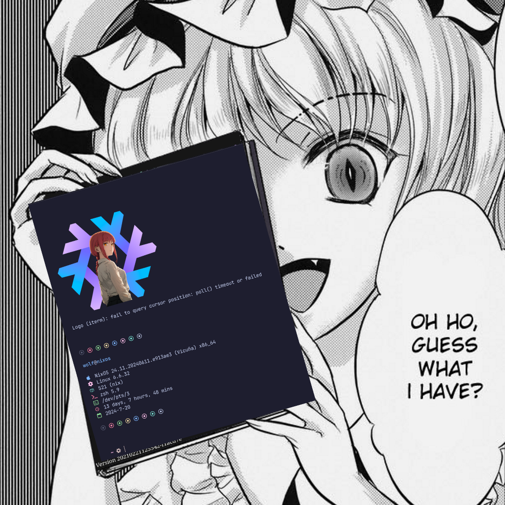

Install NixOS on any VPS

In this guide, we’ll walk you through the process of installing NixOS on a Virtual Private Server (VPS).
While most VPS providers don’t offer Nix as a default OS installation option, there is a workaround using nixos-anywhere. In this post, I’ll walk you through how to install NixOS on any VPS.
PS: Example is a
hetznervps, already running an ubuntu iso.
How
Kexec is a system call that allows you to load and boot into a new kernel directly from the currently running kernel. We will use it to boot into our minimal install system without needing a flash drive. Additionally, nixos-anywhere allows us to automatically format and partition using disko declaratively, and install the OS.
Requirements:
- A nix(os) system
- Root access over the server
- 1 gigs of RAM
- 1 cores of cpu
Configuration
We’ll be using flakes to define our overall nixos config.
The file tree structure should look like this below.
$ tree .
nixos-on-vps
├── configuration.nix
├── disk-config.nix
└── flake.nix
flake.lockis similar tocargo.lock,package.json,lazy-lock.jsonit locks the package git rev hash.configuration.nixis used to define our configuration for the nixos.disk-config.nixis to define our disko config
The initial flake.nix skeleton look like this
{
inputs = {
};
outputs = { ... }: {
};
}
Inside flake.nix, we’ll add our input repository url, nixpkgs and disko.
{
inputs = {
nixpkgs.url = "github:nixos/nixpkgs/nixpkgs-unstable";
disko.url = "github:nix-community/disko";
disko.inputs.nixpkgs.follows = "nixpkgs";
};
outputs = { ... }: {
};
}
and then we’ll define our output servers. For this example, i’m using my
server name as wolf, you can name yours anything.
{
inputs = {
nixpkgs.url = "github:nixos/nixpkgs/nixpkgs-unstable";
disko.url = "github:nix-community/disko";
disko.inputs.nixpkgs.follows = "nixpkgs";
};
outputs = { nixpkgs, disko, ... }: {
nixosConfigurations.wolf = nixpkgs.lib.nixosSystem { #FIXME: change server name
system = "x86_64-linux"; # FIXME: Change arch
modules = [
disko.nixosModules.disko
./configuration.nix
];
};
};
}
My server is
x86_64-linuxyou’ll want to change that accordingly.
I’m using the default example disk config from disko. It’ll create boot
and root partitions. I also recommend using the default unless you explicitly
want to change. You’ll want to change the device name, to know run $ lsblk
disk-config.nix
{ lib, ... }:
{
disko.devices = {
disk.disk1 = {
device = lib.mkDefault "/dev/sda"; # FIXME: do lsblk and change it to your's
type = "disk";
content = {
type = "gpt";
partitions = {
boot = {
name = "boot";
size = "1M";
type = "EF02";
};
esp = {
name = "ESP";
size = "500M";
type = "EF00";
content = {
type = "filesystem";
format = "vfat";
mountpoint = "/boot";
};
};
root = {
name = "root";
size = "100%";
content = {
type = "lvm_pv";
vg = "pool";
};
};
};
};
};
lvm_vg = {
pool = {
type = "lvm_vg";
lvs = {
root = {
size = "100%FREE";
content = {
type = "filesystem";
format = "ext4";
mountpoint = "/";
mountOptions = [
"defaults"
];
};
};
};
};
};
};
}
Now the configuration part.
configuration.nix
We’ll first import qemu-guest module since it’s a virtual machine.
{ modulesPath, config, lib, pkgs, ... }: {
imports = [
(modulesPath + "/installer/scan/not-detected.nix")
(modulesPath + "/profiles/qemu-guest.nix")
./disk-config.nix
];
system.stateVersion = "24.05";
}
I’ll be using grub as bootloader.
{
boot.loader.grub = {
efiSupport = true;
efiInstallAsRemovable = true;
};
}
Openssh is necessary for us to be able to ssh into the new server.
{
services.openssh.enable = true;
users.users.root.openssh.authorizedKeys.keys = [
"You're public ssh key" #FIXME: Add your ssh public key
];
You can define aditional packages to install as follows.
{
environment.systemPackages = map lib.lowPrio [
pkgs.curl # FIXME: define your more packages here
pkgs.gitMinimal
];
}
Now, our final configuration.nix should look like this.
{ modulesPath, config, lib, pkgs, ... }: {
imports = [
(modulesPath + "/installer/scan/not-detected.nix")
(modulesPath + "/profiles/qemu-guest.nix")
./disk-config.nix
];
boot.loader.grub = {
efiSupport = true;
efiInstallAsRemovable = true;
};
services.openssh.enable = true;
environment.systemPackages = map lib.lowPrio [
pkgs.curl
pkgs.gitMinimal
];
users.users.root.openssh.authorizedKeys.keys = [
"You're public ssh key"
];
system.stateVersion = "24.05";
}
Install the os
Now, we’ll have to run our flake to install nixos on the vps.
nix run github:nix-community/nixos-anywhere -- --flake .#wolf root@<server-ip>
It’ll ask for the root password on installation.


Congratulations!! The nixos has been installed successfully. You should be able to just edit the configuration and run
sudo nixos-rebuild switch --flake .#wolf
the other time on any changes.
Aditional tips…
You can use justfile to make this script running easy
set shell := ["zsh", "-c"]
_default:
@just -l
alias g := gens
alias c := clean
alias r := rebuild
# lists build generations
gens:
@echo "Listing build generations "
@nix-env --list-generations
# cleans up the nix garbage
clean:
@echo "Cleaning up unused Nix store items"
@sudo nix-collect-garbage -d
# Builds the serer
rebuild:
@echo "Rebuilding server configuration"
@sudo nixos-rebuild switch --flake .#wolf
The recipe should look like this
$ just
Available recipes:
clean # cleans up the nix garbage
c # alias for `clean`
gens # lists build generations
g # alias for `gens`
rebuild # Builds the serer
r # alias for `rebuild`
Now, rebuild the os with just r(ebuild)
Well, it’s this for now, I’ll see you in the next one!